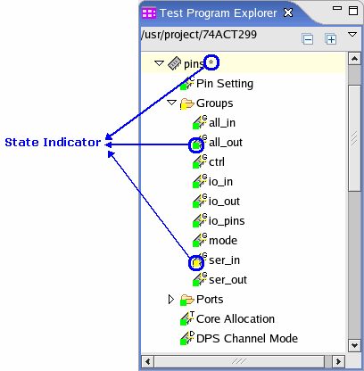
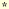

State indicator
State indicators are located in the Test Program Explorer View.

There are two kinds of state indicators:
- Square state indicator preceding the setup component name
- Asterisk state indicator following the setup component name
State Indicator |
Meaning |
|---|---|
The content of the setup component is consistent with the data in the hardware. |
|
The content of the setup component is different from the data on the hardware. You need to apply the data of the setup component. |
|
 |
The pin configuration file is different from the data in the hardware. |
Functional changes
- Introduced before SmarTest 6.3.2